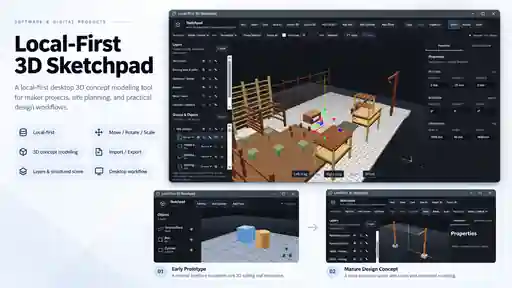

Software & Digital Products
Local-First 3D Sketchpad
A local-first desktop 3D concept-modeling tool for maker projects, site planning and practical design workflows.

The problem
Make quick 3D concept work practical without making a cloud service part of the core workflow.
I wanted a lightweight desktop tool that could support the kind of spatial thinking I use in maker work: rough site layouts, furniture-scale concepts, object placement and practical design conversations.
The goal was not to reproduce a full professional CAD package. It was to build the smallest useful local-first environment for arranging geometry, organizing a scene and keeping the working file under the user's control.
Product evolution
From three primitives to structured scenes with hundreds of objects.
The early prototype focused on the basic interaction model: a ground plane, simple geometry and a navigable 3D viewport. Later iterations added the structure needed for real design work rather than isolated shapes.
- Box, cylinder and plane creation.
- Move, Rotate and Scale editing.
- Layers for visibility, locking and scene organization.
- Groups and object hierarchy for larger scenes.
- Editable position, rotation and dimension properties.
- Grid snapping, measurement and framing controls.
- Local New / Open / Save / Save As workflows.
- 3D import/export support in the working interface.
Recent working scenes include a detailed backyard/site concept with more than 200 objects and a layered clothesline concept, demonstrating that the interface can move beyond toy examples into practical planning.
Reliability & debugging
Interaction details became product requirements, not afterthoughts.
One important development pass focused on unsaved-document behavior. An intercepted close event was re-entering the same guard when the application tried to close normally after the user selected Discard.
The close flow was corrected so intentional Discard and successful Save can bypass that guard only when appropriate, while Cancel, cancelled saves and failed saves preserve the working document.
Regression coverage now explicitly checks clean close, Cancel, Discard, successful save, cancelled save and failed save. At the documented V1 milestone, frontend tests, type checking, linting, the frontend build, Rust formatting, Rust tests and cargo check all passed.
My role
Product definition, workflow decisions, review and iterative implementation.
I define the practical use cases, interaction expectations, local-first constraints and acceptance criteria, then work iteratively through implementation, testing and correction. AI-assisted coding helps accelerate implementation and debugging, but it is a tool inside the development process rather than the category the project belongs to.
The project is being developed within A Likkle More Eco's digital-products and software exploration; this case focuses on my product-definition, workflow, testing and development role.
Current status: this is a functioning desktop tool in active development. The source is not currently published as a standalone public repository.